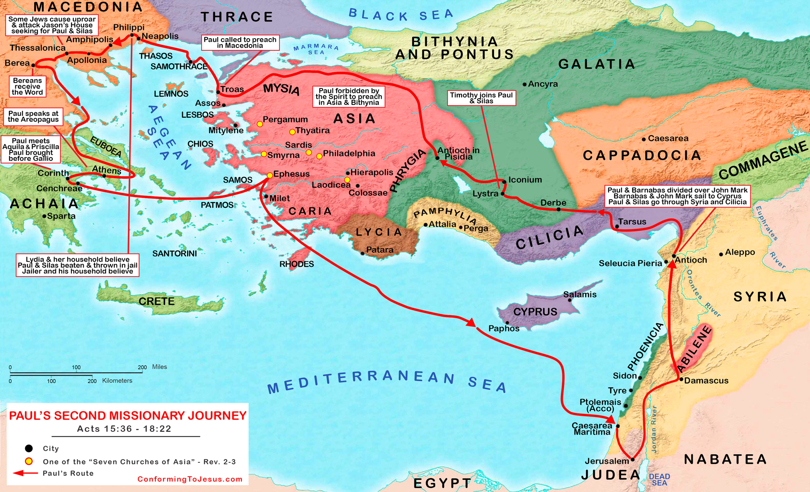

Acts 16 & 17 Reference Guide
New American Standard Bible (NASB)
Paul's Second Missionary Journey

(Click map to pan/zoom | Click city names in text to find them)
Acts 16
1Paul came also to Derbe and to Lystra. And a disciple was there, named Timothy, the son of a Jewish woman who was a believer, but his father was a Greek, 2and he was well spoken of by the brothers and sisters who were in Lystra and Iconium. 3Paul wanted this man to leave with him; and he took him and circumcised him because of the Jews who were in those parts, for they all knew that his father was a Greek. 4Now while they were passing through the cities, they were delivering the ordinances for them to follow which had been determined by the apostles and elders in Jerusalem. 5So the churches were being strengthened in the faith, and were increasing in number daily.
6They passed through the Phrygian and Galatian region, having been forbidden by the Holy Spirit to speak the word in Asia; 7and after they came to Mysia, they were trying to go into Bithynia, and the Spirit of Jesus did not permit them; 8and passing by Mysia, they came down to Troas. 9A vision appeared to Paul in the night: a man of Macedonia was standing and appealing to him, and saying, “Come over to Macedonia and help us.” 10When he had seen the vision, immediately we sought to go into Macedonia, concluding that God had called us to preach the gospel to them.
11So putting out to sea from Troas, we ran a straight course to Samothrace, and on the day following to Neapolis; 12and from there to Philippi, which is a leading city of the district of Macedonia, a Roman colony; and we were staying in this city for some days. 13And on the Sabbath day we went outside the gate to a riverside, where we were supposing that there would be a place of prayer; and we sat down and began speaking to the women who had assembled. 14A woman named Lydia, from the city of Thyatira, a seller of purple fabrics, a worshiper of God, was listening; and the Lord opened her heart to respond to the things spoken by Paul. 15And when she and her household had been baptized, she urged us, saying, “If you have judged me to be faithful to the Lord, come into my house and stay.” And she prevailed upon us.
Acts 16:16-40
16It happened that as we were going to the place of prayer, a slave-girl having a spirit of divination met us, who was bringing her masters much profit by fortune-telling. 17She followed Paul and us and cried out repeatedly, saying, “These men are bond-servants of the Most High God, who are proclaiming to you a way of salvation.” 18Now she continued doing this for many days. But Paul was greatly annoyed, and he turned and said to the spirit, “I command you in the name of Jesus Christ to come out of her!” And it came out at that very moment. 19But when her masters saw that their hope of profit was gone, they seized Paul and Silas and dragged them into the marketplace before the authorities, 20and when they had brought them to the chief magistrates, they said, “These men are throwing our city into confusion, being Jews, 21and are proclaiming customs which it is not lawful for us to accept or to observe, being Romans.” 22The crowd joined in an attack against them, and the chief magistrates tore their robes off them and proceeded to order them to be beaten with rods. 23When they had struck them with many blows, they threw them into prison, commanding the jailer to guard them securely; 24and he, having received such a command, threw them into the inner prison and fastened their feet in the stocks.
25Now about midnight Paul and Silas were praying and singing hymns of praise to God, and the prisoners were listening to them; 26and suddenly there was a great earthquake, so that the foundations of the prison were shaken; and immediately all the doors were opened, and everyone’s chains were unfastened. 27When the jailer awoke and saw the prison doors opened, he drew his sword and was about to kill himself, thinking that the prisoners had escaped. 28But Paul called out with a loud voice, saying, “Do not harm yourself, for we are all here!” 29And the jailer asked for lights and rushed in, and trembling with fear, he fell down before Paul and Silas; 30and after he brought them out, he said, “Sirs, what must I do to be saved?” 31They said, “Believe in the Lord Jesus, and you will be saved, you and your household.” 32And they spoke the word of the Lord to him together with all who were in his house. 33And he took them that very hour of the night and washed their wounds, and immediately he was baptized, he and all his household. 34And he brought them into his house and set food before them, and was overjoyed, since he had become a believer in God together with his whole household.
35Now when day came, the chief magistrates sent their officers, saying, “Release those men.” 36And the jailer reported these words to Paul, saying, “The chief magistrates have sent word that you be released. So come out now and go in peace.” 37But Paul said to them, “They have beaten us in public without trial, men who are Romans, and have thrown us into prison; and now are they sending us away secretly? No indeed! But let them come themselves and escort us out.” 38The officers reported these words to the chief magistrates. And they were afraid when they heard that they were Romans, 39and they came and pleaded with them, and when they had escorted them out, they began requesting them to leave the city. 40They left the prison and entered the house of Lydia, and when they saw the brothers and sisters, they encouraged them and departed.
Acts 17
1Now when they had traveled through Amphipolis and Apollonia, they came to Thessalonica, where there was a synagogue of the Jews. 2And according to Paul’s custom, he visited them, and for three Sabbaths reasoned with them from the Scriptures, 3explaining and giving evidence that the Christ had to suffer and rise from the dead, and saying, “This Jesus whom I am proclaiming to you is the Christ.” 4And some of them were persuaded and joined Paul and Silas, along with a large number of the God-fearing Greeks and a significant number of the leading women. 5But the Jews, becoming jealous and taking along some wicked men from the marketplace, formed a mob and set the city in an uproar; and they attacked the house of Jason and were seeking to bring them out to the people. 6When they did not find them, they began dragging Jason and some brothers before the city authorities, shouting, “These men who have upset the world have come here also; 7and Jason has welcomed them, and they all act contrary to the decrees of Caesar, saying that there is another king, Jesus.” 8They stirred up the crowd and the city authorities who heard these things. 9And when they had received a pledge from Jason and the others, they released them.
10The brothers immediately sent Paul and Silas away by night to Berea, and when they arrived, they went into the synagogue of the Jews. 11Now these people were more noble-minded than those in Thessalonica, for they received the word with great eagerness, examining the Scriptures daily to see whether these things were so. 12Therefore many of them believed, along with a significant number of prominent Greek women and men. 13But when the Jews of Thessalonica found out that the word of God had been proclaimed by Paul in Berea also, they came there as well, agitating and stirring up the crowds. 14Then immediately the brothers sent Paul out to go as far as the sea; and Silas and Timothy remained there. 15Now those who escorted Paul brought him as far as Athens; and receiving a command for Silas and Timothy to come to him as soon as possible, they left.
Acts 17:16-34
16Now while Paul was waiting for them at Athens, his spirit was being provoked within him as he was observing the city full of idols. 17So he was reasoning in the synagogue with the Jews and the God-fearing Gentiles, and in the marketplace every day with those who happened to be present. 18And also some of the Epicurean and Stoic philosophers were conversing with him. Some were saying, “What would this idle babbler wish to say?” Others, “He seems to be a proclaimer of strange deities”—because he was preaching Jesus and the resurrection. 19And they took him and brought him to the Areopagus, saying, “May we know what this new teaching is which you are proclaiming? 20For you are bringing some strange things to our ears; so we want to know what these things mean.” 21(Now all the Athenians and the strangers visiting there used to spend their time in nothing other than telling or hearing something new.)
22So Paul stood in the midst of the Areopagus and said, “Men of Athens, I observe that you are very religious in all respects. 23For while I was passing through and examining the objects of your worship, I also found an altar with this inscription, ‘TO AN UNKNOWN GOD.’ Therefore, what you worship in ignorance, this I proclaim to you. 24The God who made the world and everything in it, since He is Lord of heaven and earth, does not dwell in temples made by hands; 25nor is He served by human hands, as though He needed anything, since He Himself gives to all people life and breath and all things; 26and He made from one man every nation of mankind to live on all the face of the earth, having determined their appointed times and the boundaries of their habitation, 27that they would seek God, if perhaps they might feel around for Him and find Him, though He is not far from each one of us; 28for in Him we live and move and exist, as even some of your own poets have said, ‘For we also are His descendants.’ 29Being then the descendants of God, we ought not to think that the Divine Nature is like gold or silver or stone, an image formed by human skill and thought. 30Therefore, having overlooked the times of ignorance, God is now proclaiming to mankind that all people everywhere are to repent, 31because He has fixed a day in which He will judge the world in righteousness through a Man whom He has appointed, having furnished proof to all people by raising Him from the dead.”
32Now when they heard of the resurrection of the dead, some began to sneer, but others said, “We shall hear you again concerning this.” 33So Paul went out of their midst. 34But some men joined him and believed, among whom also were Dionysius the Areopagite and a woman named Damaris and others with them.